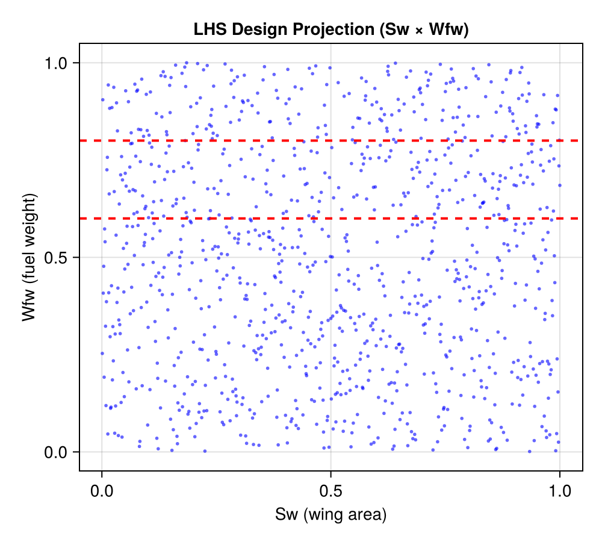
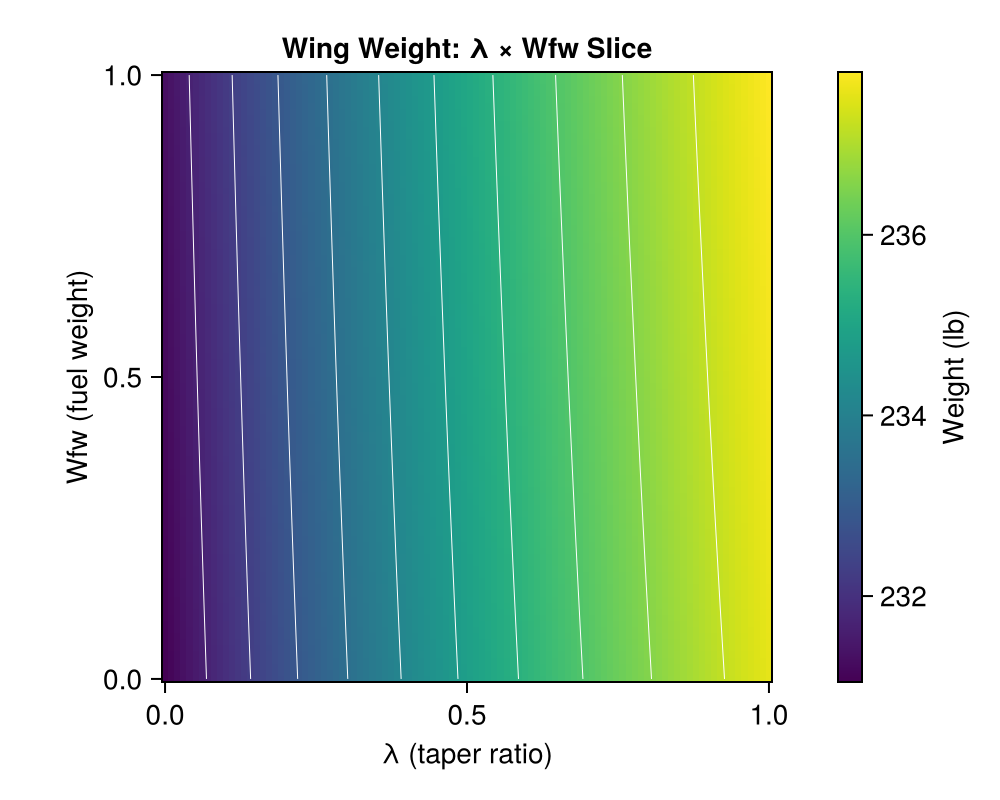
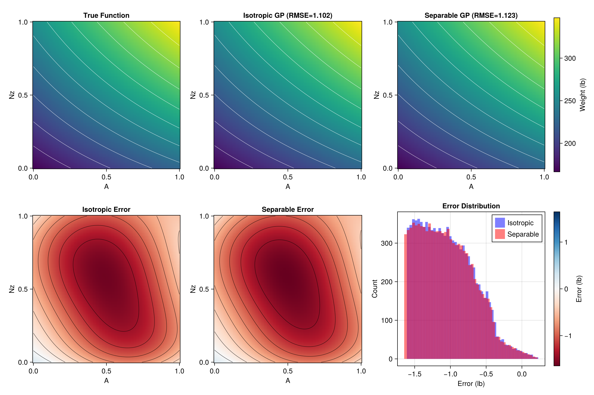
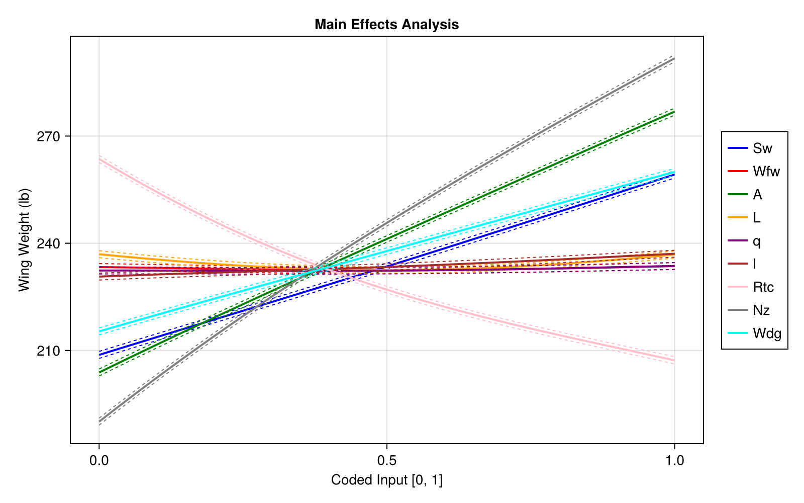

Wing Weight Surrogate Example
This example demonstrates GP surrogate modeling using the aircraft wing weight simulator from Chapter 1 of "Surrogates" by Robert Gramacy.
Overview
We will:
- Build a GP surrogate for a 9-dimensional wing weight function
- Compare isotropic vs separable (ARD) GP models
- Perform main effects/sensitivity analysis
- Visualize predictions on 2D slices
Setup
using laGP
using Random
using LatinHypercubeSampling
using Statistics: mean
Random.seed!(42)Wing Weight Simulator
The simulator computes aircraft wing structural weight based on 9 design parameters:
function wingwt(; Sw=0.48, Wfw=0.4, A=0.38, L=0.5, q=0.62,
l=0.344, Rtc=0.4, Nz=0.37, Wdg=0.38)
# Transform coded [0,1] inputs to natural units
Sw_nat = Sw * (200 - 150) + 150 # Wing area (ft²)
Wfw_nat = Wfw * (300 - 220) + 220 # Fuel weight (lb)
A_nat = A * (10 - 6) + 6 # Aspect ratio
L_nat = (L * 20 - 10) * π / 180 # Sweep angle (rad)
q_nat = q * (45 - 16) + 16 # Dynamic pressure (lb/ft²)
l_nat = l * 0.5 + 0.5 # Taper ratio
Rtc_nat = Rtc * 0.1 + 0.08 # Thickness ratio
Nz_nat = Nz * 3.5 + 2.5 # Load factor
Wdg_nat = Wdg * 800 + 1700 # Gross weight (lb)
# Wing weight formula
W = 0.036 * Sw_nat^0.758 * Wfw_nat^0.0035
W *= (A_nat / cos(L_nat)^2)^0.6
W *= q_nat^0.006 * l_nat^0.04
W *= (100 * Rtc_nat / cos(L_nat))^(-0.3)
W *= (Nz_nat * Wdg_nat)^0.49
return W
end
# Variable names
var_names = ["Sw", "Wfw", "A", "L", "q", "l", "Rtc", "Nz", "Wdg"]
# Cessna C172 baseline
baseline = [0.48, 0.4, 0.38, 0.5, 0.62, 0.344, 0.4, 0.37, 0.38]Generate Training Data
Use Latin Hypercube Sampling for space-filling design:
n = 1000
plan, _ = LHCoptim(n, 9, 10)
X = Matrix{Float64}(plan ./ n)
# Evaluate simulator
Y = [wingwt(Sw=X[i,1], Wfw=X[i,2], A=X[i,3], L=X[i,4],
q=X[i,5], l=X[i,6], Rtc=X[i,7], Nz=X[i,8], Wdg=X[i,9])
for i in 1:n]
println("Training data: $n points in 9 dimensions")
println("Response range: [$(round(minimum(Y), digits=2)), $(round(maximum(Y), digits=2))] lb")Example response surfaces from Chapter 1:


The Latin Hypercube design provides space-filling coverage:

Fit Isotropic GP
# Get hyperparameter ranges
d_range = darg(X)
g_range = garg(Y)
# Fit isotropic GP
gp_iso = new_gp(X, Y, d_range.start, g_range.start)
jmle_gp!(gp_iso; drange=(d_range.min, d_range.max), grange=(g_range.min, g_range.max))
println("Isotropic GP:")
println(" d = $(round(gp_iso.d, sigdigits=4))")
println(" g = $(round(gp_iso.g, sigdigits=4))")
println(" log-likelihood = $(round(llik_gp(gp_iso), digits=2))")Fit Separable GP
# Per-dimension lengthscale ranges
d_range_sep = darg_sep(X)
d_start_sep = [r.start for r in d_range_sep.ranges]
d_ranges_sep = [(r.min, r.max) for r in d_range_sep.ranges]
# Fit separable GP
gp_sep = new_gp_sep(X, Y, d_start_sep, g_range.start)
jmle_gp_sep!(gp_sep; drange=d_ranges_sep, grange=(g_range.min, g_range.max))
println("Separable GP:")
println(" Lengthscales:")
for (j, name) in enumerate(var_names)
println(" $name: $(round(gp_sep.d[j], sigdigits=4))")
end
println(" g = $(round(gp_sep.g, sigdigits=4))")
println(" log-likelihood = $(round(llik_gp_sep(gp_sep), digits=2))")Compare on 2D Slice
Predict on A (aspect ratio) × Nz (load factor) slice:
n_pred = 100
x_pred = range(0.0, 1.0, length=n_pred)
# Create prediction grid (vary A and Nz, fix others at baseline)
XX = Matrix{Float64}(undef, n_pred^2, 9)
for i in 1:n_pred^2
XX[i, :] .= baseline
end
idx = 1
for nz in x_pred
for a in x_pred
XX[idx, 3] = a # A
XX[idx, 8] = nz # Nz
idx += 1
end
end
# Predictions
pred_iso = pred_gp(gp_iso, XX; lite=true)
pred_sep = pred_gp_sep(gp_sep, XX; lite=true)
# True values for comparison
true_vals = [wingwt(Sw=baseline[1], Wfw=baseline[2], A=a, L=baseline[4],
q=baseline[5], l=baseline[6], Rtc=baseline[7], Nz=nz, Wdg=baseline[9])
for a in x_pred, nz in x_pred]
# RMSE
rmse_iso = sqrt(mean((vec(true_vals) .- pred_iso.mean).^2))
rmse_sep = sqrt(mean((vec(true_vals) .- pred_sep.mean).^2))
println("A × Nz slice RMSE:")
println(" Isotropic: $(round(rmse_iso, digits=4)) lb")
println(" Separable: $(round(rmse_sep, digits=4)) lb")2D slice visualizations of the wing weight function:


Isotropic vs Separable GP comparison on the A×Nz slice:

Main Effects Analysis
Compute sensitivity of each input while holding others at baseline:
n_me = 100
x_me = range(0.0, 1.0, length=n_me)
main_effects = Matrix{Float64}(undef, n_me, 9)
for j in 1:9
# Create prediction matrix
XX_me = repeat(baseline', n_me, 1)
XX_me[:, j] = collect(x_me)
# Predict using separable GP
pred_me = pred_gp_sep(gp_sep, XX_me; lite=true)
main_effects[:, j] = pred_me.mean
end
# Report sensitivity (range of main effect)
println("Variable sensitivity (range of main effect):")
for j in 1:9
effect_range = maximum(main_effects[:, j]) - minimum(main_effects[:, j])
println(" $(var_names[j]): $(round(effect_range, digits=2)) lb")
endVisualization (with CairoMakie)
using CairoMakie
# Main effects plot
fig = Figure(size=(800, 500))
ax = Axis(fig[1, 1],
xlabel="Coded Input [0, 1]",
ylabel="Wing Weight (lb)",
title="Main Effects Analysis"
)
colors = [:blue, :red, :green, :orange, :purple, :brown, :pink, :gray, :cyan]
for j in 1:9
lines!(ax, collect(x_me), main_effects[:, j],
color=colors[j], linewidth=2, label=var_names[j])
end
Legend(fig[1, 2], ax, nbanks=1)
figThe main effects analysis reveals input sensitivities:

Key Findings
- Most influential inputs: Sw (wing area), A (aspect ratio), Nz (load factor)
- Least influential inputs: l (taper ratio), Wfw (fuel weight)
- Isotropic vs Separable: For smooth functions, both may converge to similar predictions
- Lengthscale interpretation: Smaller lengthscale = more sensitive input
Surrogate Benefits
- Speed: Surrogate predictions are instantaneous vs expensive simulations
- Optimization: Use GP for derivative-free optimization
- Uncertainty: Predictive variance quantifies surrogate accuracy
- Sensitivity: Lengthscales directly indicate input importance